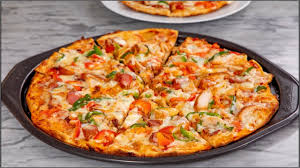
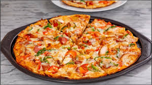

We experience new places through food.
As travelers, migrants or explorers, our first encounter with a novel taste or food culture may happen in
one of many spaces — a restaurant, family home, market, grocery store, or food truck — but the encounter itself is inescapable.
 
